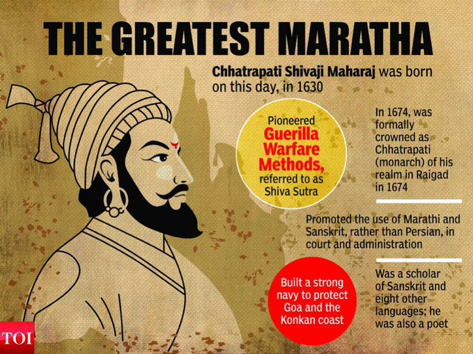

Welcome Back
Select some topics that you are interested in to personalize your twitter experience, starting with finding people to follow
#Unite2FightCorona
#IndaFightsCorona
#OmicronVarient
पिछले 7 सालों में हमने दिल्ली में 20,000 क्लासरूम बनाए। बाक़ी सारी राज्य सरकारों और केंद्र सरकार मिलाकर भी बाक़ी देश में सात साल में 20,000 क्लासरूम नहीं बने।
1 story, 8 chapters and too many secrets to be unleashed 🤐#BestsellerOnPrime, watch now!
Not just the greatest Maratha, but a great Indian… #shivajimaharajjayanti
@mnreindia and @ficci_india organise Chaitan Baithak on "Roadmap to achieve net-zero carbon emission till 2070
The Chaitan Baithak was apart of MNRE's ongoing celebration
of #AzadiKaAmritMahautsav
Polaris Program Crew Will Conduct First-Ever Commercial Spacewalk Wearing New SpaceX Spacesuits
@SpaceX @ElonMusk
Trust me they are heavier than you think.. 😜😎
#RL9#IFFHS
#International#TopDivision
#WorldBestPlayer
Oop's Sorry We Ran Into a Problem.Please check your Internet Connection.